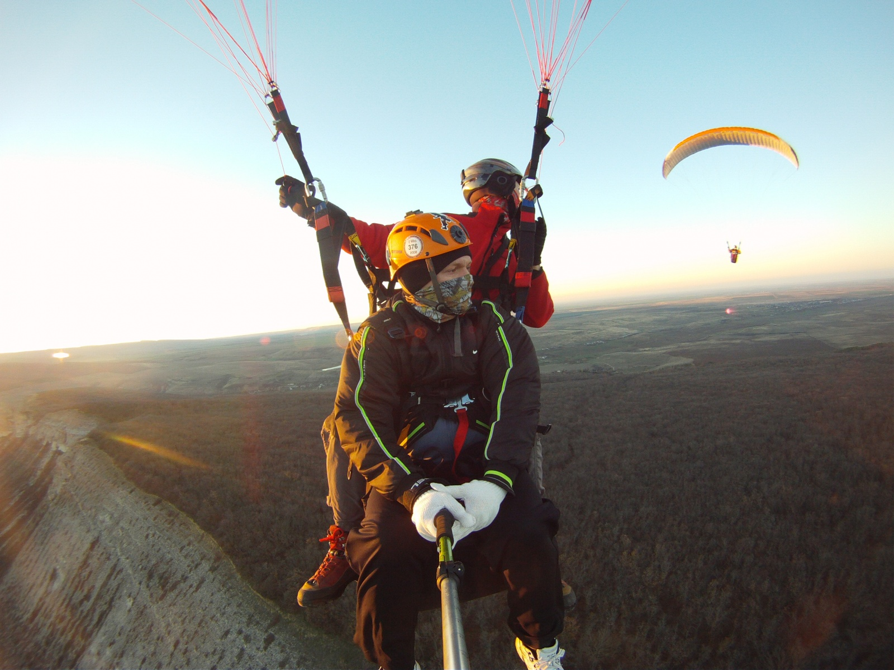
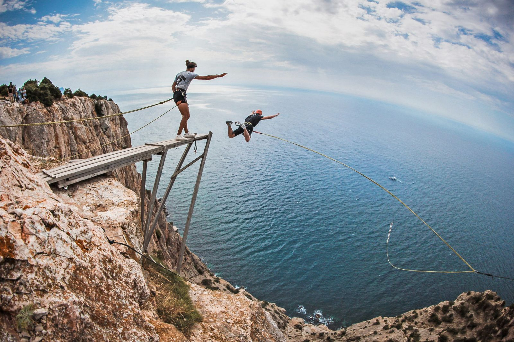
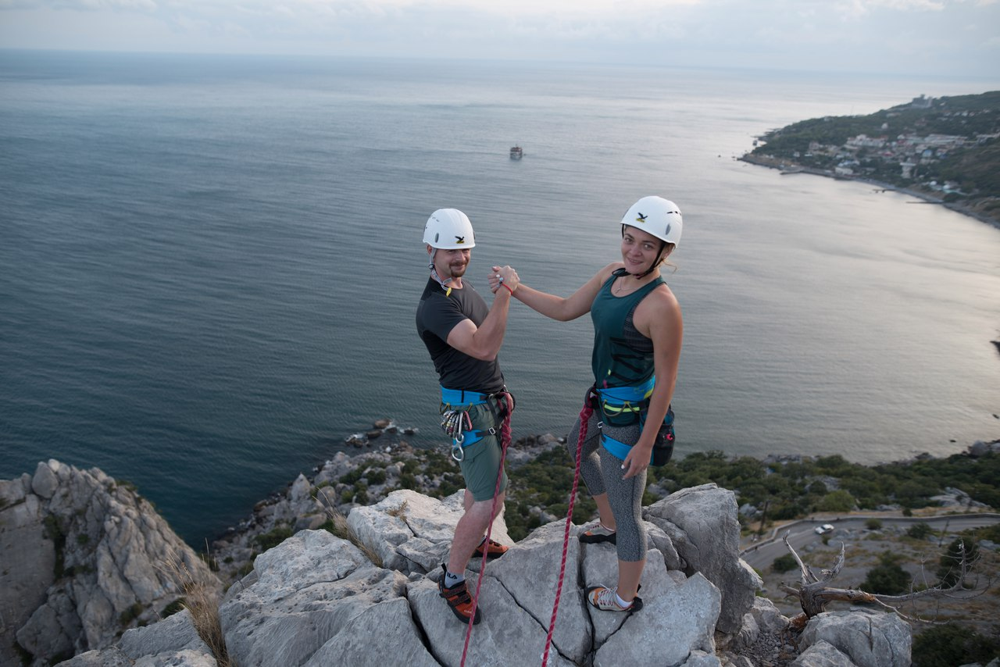
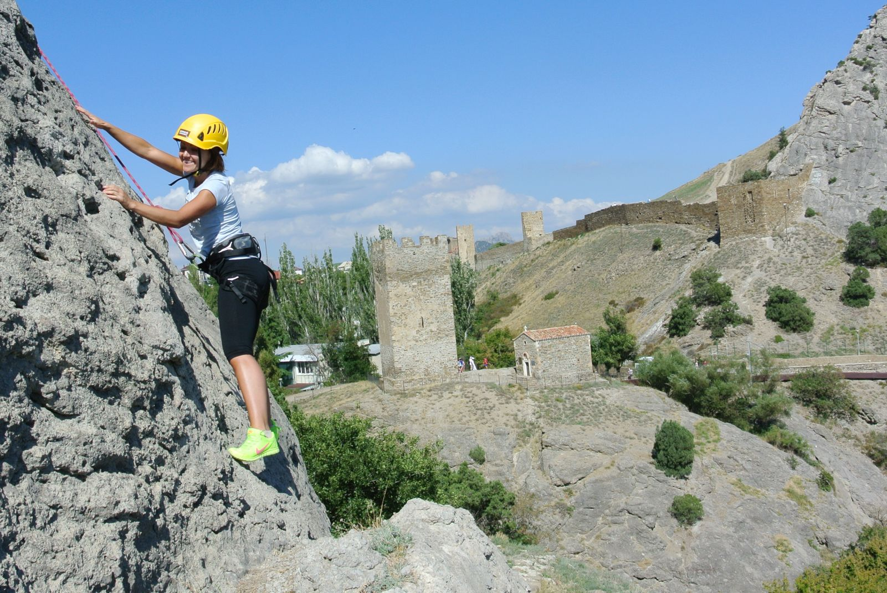
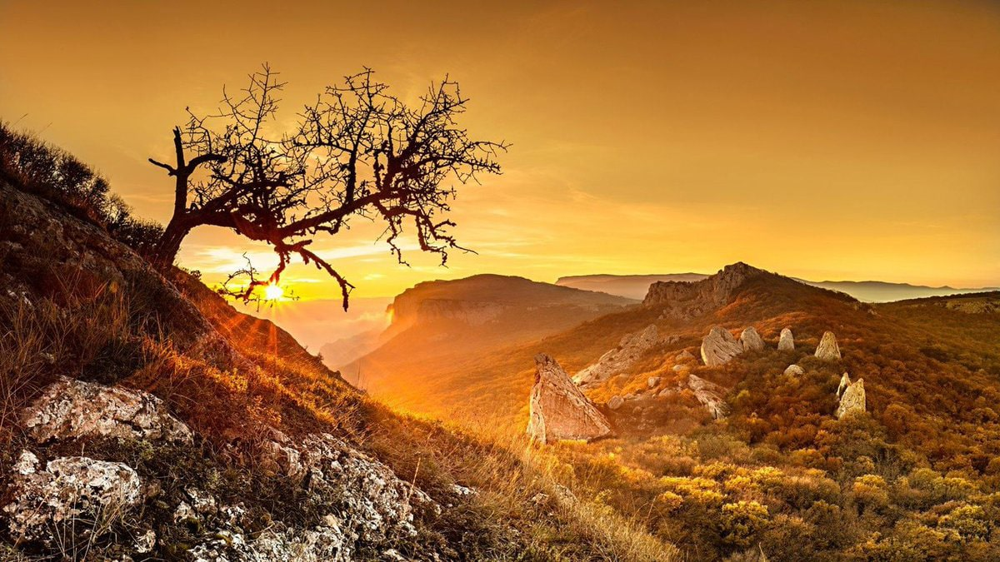
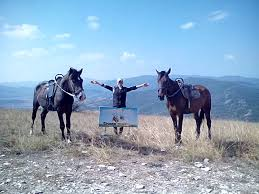
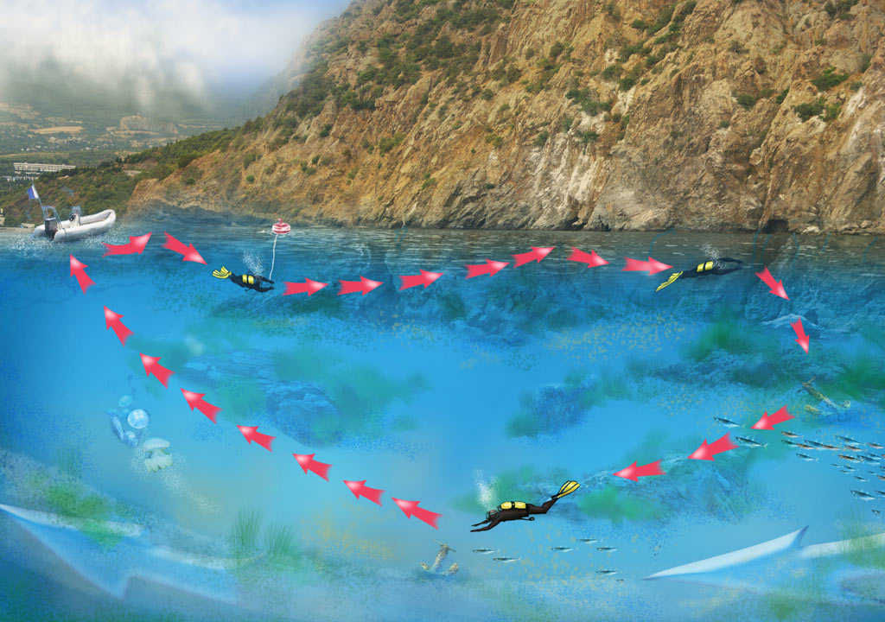
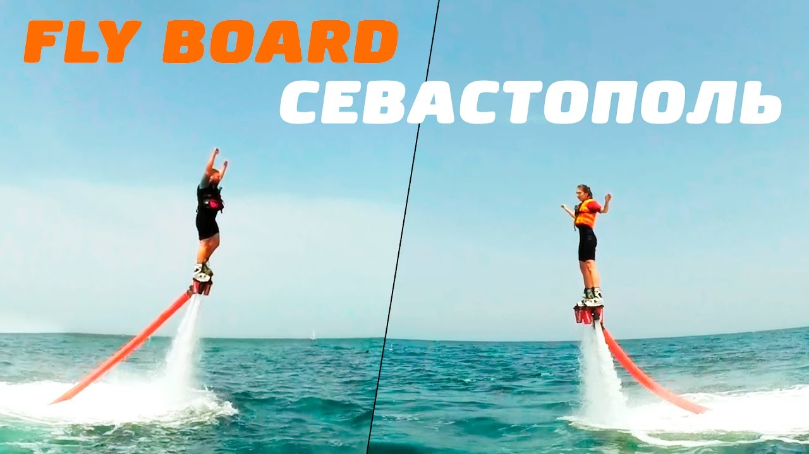
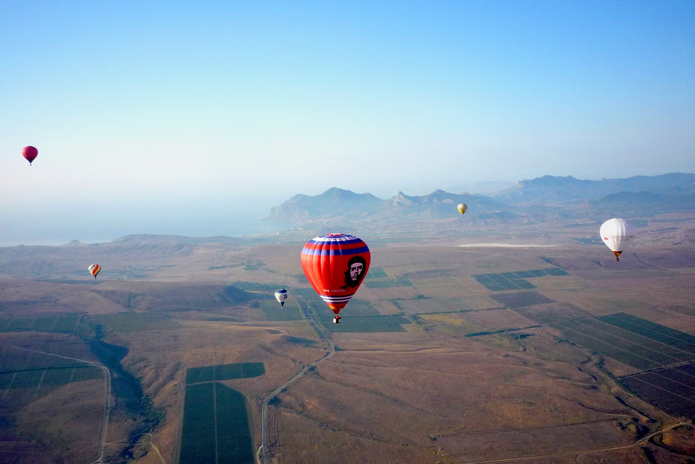
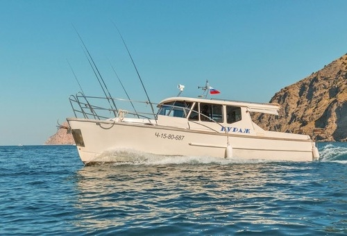

|  | 1 - Полет на пароплане в СтрогановкеЛетное место удобно расположено относительно Симферополя, полеты проходят с возвышенности над пос.Строгановка |
|---|---|
|  | 2 - Роупджампинг на Кая-Баш. 140 метров в СевастополеНовый прыжковый объект в Крыму. Высота экзита над уровнем моря: 260 м. Высота стенки: 140 м, глубина падения: до 120 м |
|  | 3 - Неделя в горах Крыма. Альпинизм и скалолазаниеВеликолепная возможность отдохнуть от городской суеты в окружении гор, постигая теорию и практику работы на скальном рельефе. Новички сделают свои первые шаги в альпинизме и скалолазании. Продвинутым горовосходителям будет предоставлена возможность повысить свой уровень, сходить маршруты сложностью 4а — 5б. Кроме всего этого ВАС ждут увлекательные путешествия по Крымскому побережью, посещение интересных мест, о которых знают исключительно аборигены, а так же море, солнце, красивые закаты и уютные вечерние посиделки у костра! |
|  | 4 - Скалолазание в Судаке, в группе 2-4 человекаПокорить скалу сможет и взрослый, и ребенок. Маршруты доступны неподготовленным людям. Объясняют, страхуют верёвкой и следят за безопасностью инструкторы с опытом скалолазания более 7 лет, имеющие профильное удостоверение и допуски к работе на высоте. В маленькой группе от 2 до 4 человек всегда комфортная атмосфера. |
|  |
5 - Поход по Крыму Испытания Храма СолнцаПоход по крымским яйлям вдоль моря, великолепные видовые площадки! Перед вами – поход по Крыму среднего уровня сложности, который подойдёт для всех, кому интересны маршруты по горам вдоль моря. Мы начнём своё путешествие из прекрасного курортного города Ялта и закончим его в Севастополе, куда группу довезёт автобус от бухты Ласпи. Название маршрута в полной мере отражает его суть. Храм Солнца – мощнейшее место Силы, исполняющее желания. Однако тот, кто приходит к храму с суетными мыслями, как правило, не получает ничего. Пеший поход с рюкзаком позволяет очистить ум, став спокойнее и ближе к природе. Разумеется, для этого понадобится пройти ряд испытаний. Испытаний Храма Солнца… |
|  |
6 - Конная экскурсия из Феодосии на вершину Тепе-ОбаМаршрут 1:30 часовой протяжённостью 5,5 км |
|  |
7 - Пробное погружение. Подводный родник Аю-Дага, ЯлтаСкалы Медведь-горы, обрывающиеся в море, создают уголок дикой природы, доступный только с воды. Велика вероятность встретить редкие виды рыб: камбала глосса, калкан, морской петух, горбыль. |
|  |
8 - Полёт на флайборде в СевастополеЕсли хотите летать над водой как птица, плавать и нырять как дельфин, тогда Вам нужно звонить нам! |
|  |
9 - Полет на воздушном шаре у моряМы предлагаем ощутить всю прелесть нашего чудесного полуострова, пролетев над родными просторами в корзине воздушного шара. Любой город может открыться для Вас с совершенно иной стороны, под новым и неожиданным ракурсом. Для реализации вашего желания нам нужны Вы и хорошая погода с максимальной скоростью ветра 5 м/с. |
|  | 10 - Морская прогулка на быстроходном катере ТританВы увидите живописные пейзажи Балаклавы, а так же активно половите рыбу в открытом море с борта быстроходного катера «Тритан». |